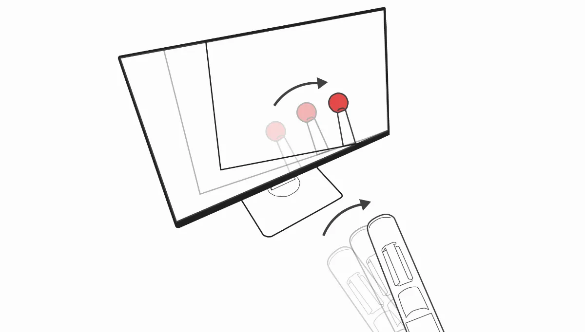

かんたんに、画面に、入る、ふれる
一般的な環境でも、触覚を含む映像の収録・再生を可能にします。
収録システム: TeleStickRecorder
収録システムは、カメラの周辺機器として設計されています。把持部分のすぐ先にカメラを取り付けられ、棒がカメラの中央に映り込みます。
再生システム: TeleStickPlayer
再生システムは、可聴域スピーカーと振動子を内蔵した棒状デバイスです。TeleStickRecorderで収録した音を振動に変換して触覚を提示します。
棒の位置をトラッキング
TeleStickPlayerの動きと映像の動きが連動します。自分の持つTeleStickPlayerが映像内に延長しているように感じます。
触覚映像を楽しむ
TeleStickを使って、新たな映像体験を楽しんでください。